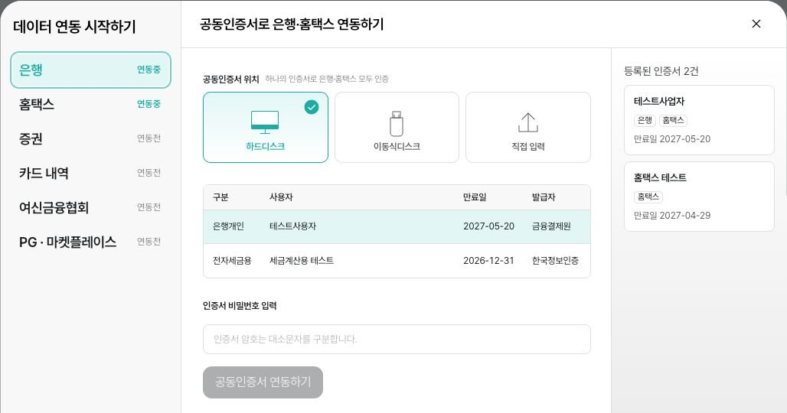
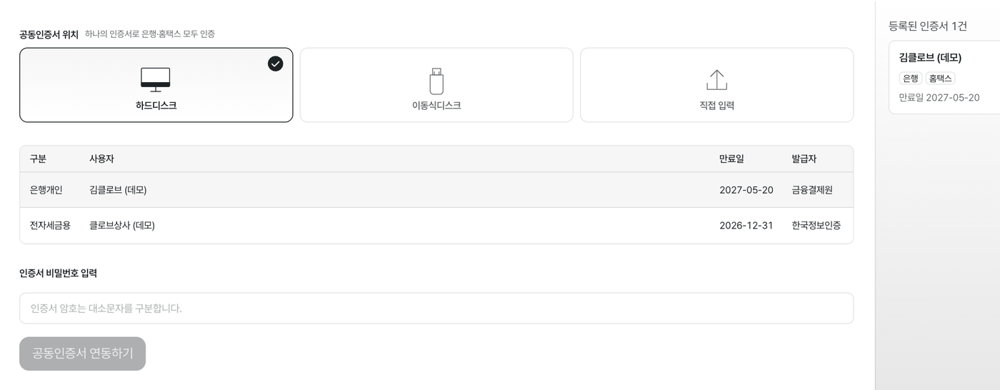
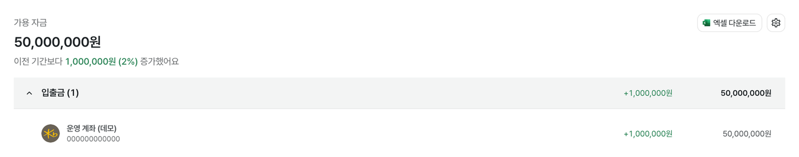
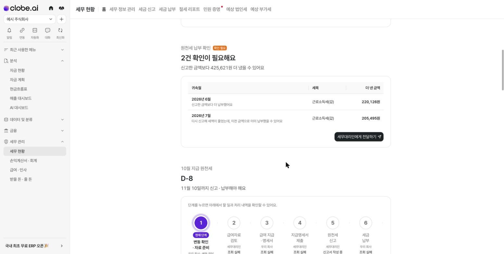
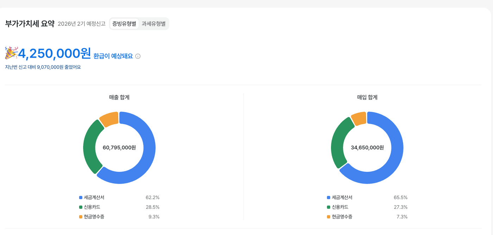
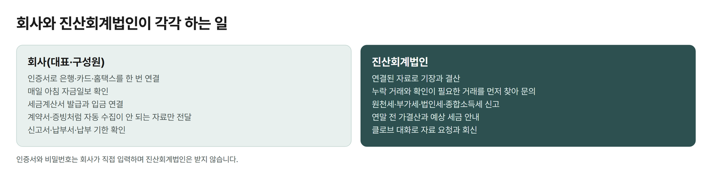
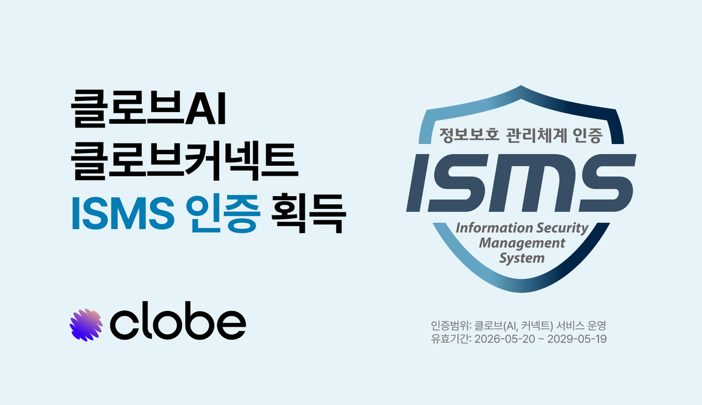

필수 1
홈택스
- 왜
- 세금계산서, 현금영수증, 신고·납부 내역의 원천입니다. 매출·매입 자료가 여기서 옵니다.
- 준비
- 홈택스 로그인용 공동인증서와 비밀번호
- 방법
- 연동 화면의 홈택스 영역에서 "연동하기"를 누르고 인증서를 고른 뒤 비밀번호를 입력합니다.
- 안 하면
- 매출·매입 집계와 신고서·납부서 표시가 되지 않습니다.
은행·카드·홈택스를 한 번 연결해 두시면 진산회계법인이 같은 자료로 기장과 신고를 진행합니다. 통장 엑셀과 카드 내역을 내려받아 보내는 일이 없어지고, 회사는 자금과 세금을 한 화면에서 봅니다. 이용료는 없습니다.
위 버튼은 진산회계법인 전용 초대 링크입니다. 누르면 "진산회계법인 여의도지점에서 보낸 초대장" 화면이 열리고 본인인증, 사업자 확인, 공동인증서 등록 세 단계로 연결까지 끝납니다. 이메일·알림톡 초대장을 받으셨다면 그 안의 버튼을 눌러도 같습니다. 이미 클로브 AI 를 쓰고 계시면 아래 "가입 방법 B"대로 세무대리인만 연결해 주십시오.
클로브 AI 는 연결된 기관에서 자료를 가져오는 서비스입니다. 연동이 비어 있으면 다음 일이 그대로 남습니다.
홈택스 로그인에 쓰는 법인(사업자) 공동인증서입니다. 은행에도 같은 인증서가 등록돼 있으면 한 번에 둘 다 연결됩니다. 인증서 파일(.pfx) 위치를 알아 두십시오.
법인카드를 쓰는 카드사마다 필요합니다. 신한카드·롯데카드 등 일부는 관리자 계정이어야 하고, 기업은행 카드는 BC카드로 연결합니다.
인증서 첫 등록은 Windows PC 에서 합니다. 그 뒤에는 Mac 과 휴대폰에서도 이용할 수 있습니다. 인증서와 비밀번호는 회사가 직접 입력하며 진산에 보내지 않습니다.
세 곳이 연결돼야 기장과 신고가 자료 요청 없이 돌아갑니다. 순서대로 진행하시면 됩니다. 버튼을 누르면 클로브 AI 연동 화면이 새 창으로 열립니다.
스마트스토어, 쿠팡, 배달앱, 토스페이먼츠 같은 결제대행과 판매채널 계정을 연결합니다. 정산 자료가 자동으로 들어와 매출 누락 확인이 쉬워집니다.
증권사 계좌가 있으면 잔액과 보유 종목이 함께 수집됩니다. 결산 때 평가 자료를 따로 보내지 않아도 됩니다.
"세무 관리" 메뉴의 잠긴 항목에서 세무담당자 권한을 설정하고 "급여 · 인사"에 사원과 급여대장을 등록합니다. 급여명세서 발송까지 클로브에서 됩니다.
여섯 가지가 모두 체크되면 진산 쪽에서도 자료가 보입니다. 체크 표시는 이 기기에서만 저장됩니다.

1stdaeun@lighttax.biz
왼쪽 메뉴의 "연동"에서 "연동 시작하기"를 누르고 홈택스, 은행, 카드, PG·판매채널 순서로 연결합니다. 모든 화면은 클로브 공식 안내의 데모 데이터입니다.












없습니다. 클로브 AI 이용료는 없고 기장료는 기존 계약과 같습니다.
5회 오류 뒤에는 10분이 지나야 다시 시도할 수 있습니다. 10분 뒤 같은 화면에서 다시 입력하십시오.
나머지 한 곳을 같은 화면에서 추가로 연동하면 됩니다. 은행 인증서와 홈택스 인증서가 다르면 각각 등록합니다. 안 되면 화면을 캡처해 담당자에게 보내 주십시오.
인증서 등록 뒤에 만든 계좌와 카드는 자동으로 붙지 않습니다. 연동 화면에서 "기관 갱신"을 누르면 연결됩니다.
사업자등록번호마다 각각 연결합니다. 한 사람이 여러 회사를 전환해 볼 수 있습니다. 방법은 담당자가 안내드립니다.
됩니다. 소유자나 관리자가 그 직원에게 "연동 관리" 권한을 주면 됩니다. 급여·세무 화면은 세무담당자 권한이 있어야 열립니다.
가입과 조회는 휴대폰으로 됩니다. 인증서 첫 등록만 Windows PC 에서 하고, 휴대폰에서는 이어서 진행할 링크를 받아 연결합니다.
자동 집계 손익은 결산 전 참고용입니다. 확정 재무제표는 진산회계법인이 회계처리와 결산을 거쳐 작성하며, 두 숫자가 다를 수 있습니다.
진산회계법인 여의도지점 담당 회계사 김다은. 초대장 재발송, 연동 오류 화면 확인, 본점·지점 설정을 도와드립니다.
1stdaeun@lighttax.biz